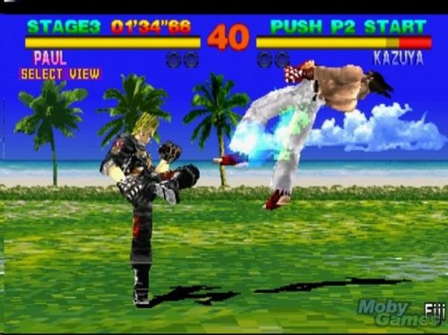
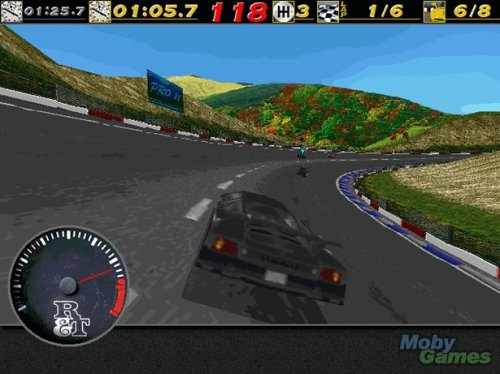
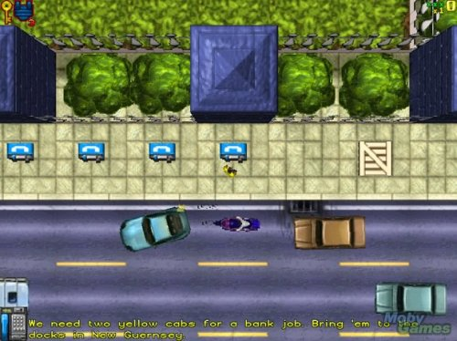
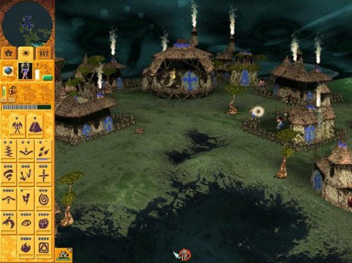
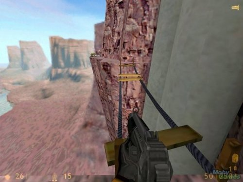
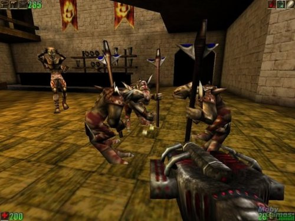

Тетрис был впервые написан Алексеем Пажитновым в июне 1985 года на компьютере Электроника-60. Работая в ВЦ Академии наук СССР, Пажитнов занимался проблемами искусственного интеллекта и распознавания речи, а для обкатки идей применял головоломки, в том числе и классическое пентамино. Пажитнов пытался автоматизировать укладку пентамино в заданные фигурки. Однако вычислительных мощностей тогдашнего оборудования для вращения пентамино не хватало, приходилось отлаживать на тетрамино, что и определило название игры — «Тетрис» (от др.-греч. τετράς — четыре). В тех опытах и родилась основная идея «Тетриса» — чтобы фигурки падали, а заполненные ряды исчезали.
Известная в России и странах СНГ как просто «Танчики»
Полигон действий виден вертикально сверху. Игрок должен, управляя своим танком, уничтожить все танки противника на уровне, которые постепенно появляются с севера игрового поля. Танки противника пытаются уничтожить базу игрока (на юге игрового поля, представлена в виде орла) и самого игрока. На каждом уровне нужно уничтожить 20 единиц бронетехники противника разных видов. Если противник сможет разрушить базу или лишит игрока всех жизней — игра проиграна.
Похождения самого известного водопроводчика Марио для одноименной видеоигры.
Космическая эпопея по мотивам одноименной Саги.
Похождения синего антропоморфного ёжа, который живёт где-то на островах на Мобиусе (по версии комиксов и некоторым мультфильмов). Он обладает способностью бегать на сверхзвуковых скоростях, отчего и получил своё имя (англ. sonic — звуковой).
Игра для Nintendo и под DOS о приключениях в космосе 8летнего мальчугана.
Серия компьютерных игр в жанре пошаговой стратегии. Игрок управляет цивилизацией, с помощью которой нужно покорить весь мир. Сделать это можно разными способами: дипломатией, наукой или войной, — по выбору игрока.
Компьютерная игра жанра головоломок. Впервые была разработана в DMA Design и выпущена под маркой Psygnosis на Commodore Amiga в 1991 году, вскоре после чего была портирована на множество других платформ.
Игра основана на идее, которую до этого никто не пробовал.
По уровню движутся «лемминги» — маленькие существа, бездумно шагающие вперёд и попадающие все вместе на любую опасность, стоящую у них на пути. Отдавая задания отдельным леммингам (копать туннель, разворачивать леммингов в другую сторону и т. д.), надо довести определённый процент группы к «дому».
В разных версиях игры встречается до 120 уровней.
Крутые на то время мотогонки.
Культовая для своего времени ролевуха. Механика основана на третьей редакции Dungeons & Dragons. Действие разворачивается в подземельях в фэнтезийном мире Forgotten Realms.
Первая игра из серии квестов про гоблинов от Coktel Vision. Три гоблина работают на злого колдуна, но в конце концов от него избавляются. Не слишком удачным нововведением стала возможность проигрыша: если гоблины сделают слишком много неправильных вещей (при этом они уморительно ругаются на игрока), то игра начинается с начала уровня.
Известный файтинг. Для своего времени считался довольно кровавым, так как была предусмотрена система добивания врага. Известно, что в отличие от других файтингов в ней использовались спрайты с видео реальных актеров, в то время как у остальных они еще были полностью рисованные.
Первый известный псевдотрехмерный шутер. Представляешь себя эдаким антифашистским рембо, ходишь по их штаб-квартире и мочишь нацистов.
Одна из первых стратегических игр в реальном времени. Её часто называют первой игрой этого жанра, однако это не так. В действительности первой является «Stonkers» для ZX Spectrum (1983). Однако, появление «Dune II» существенно повлияло на развитие жанра и его популярность. Игра по мотивам одноименного романа Фрэнка Герберта (1984г.)
Первый известный градостроительный симулятор. Игра не заканчивается после выполнения игроком миссии, она моет быть бесконечной.
Адское мочилово монстров. Один из самых популярных шутеров от первого лица своего времени. Говорят, что в него играло более 15 млн. чел.
Реально культовая стратегия в стиле фэнтези, завоевавшая со временем умы сотен миллионов человек. Популярна по сей день в качестве продолжений и возможности играть он-лайн.
?

?
Тоже весьма популярная серия файтингов. С каждым продолжением все больше превосходящая Mortal Kombat.
?

?
Один из самых реалистичных по меркам того времени автомобильных симуляторов.
Захватывающая стратегическая игра в режиме реального времени с различныи миссиями, историей.
Не менее захватывающая стратегия. По легенде Союзные войска защищают Европу от "Красного террора" Советского Союза. Много миссий, еще больше карт, возможно играть за любую из представленных стран, у каждой свои особенности в оружии и видах юнитов.
Очередной культовый шутера от первого лица. Игра совершила прорыв в 3D технологиях, используя текстурированные полигональные модели вместо спрайтов, тем самым реализуя полностью трёхмерный мир, вместо двумерной карты с информацией о высоте (как было в Doom). Другим новшеством было использование динамических источников света.
Шутер от первого лица, от компании 3D Realms (подразделение Apogee).
Duke Nukem не стала очередным клоном Doom, она составила достойную конкуренцию вышедшему в то же время технически более совершенному Quake и привнесла в игровую индустрию столько нововведений и неожиданных решений, что теперь по праву может оспорить звание прародителя многих современных шутеров (например, Half-Life и Half-Life 2).
?

?
Оригинальное GTA с довольно таки сырым и примитивным насилием был ужасной вещью для того времени, так как вам предоставлялись очки за то, что вы совершали погром (в этом отношении первые две игры заслуживают действительно большую часть критики, чем поздние части, в которых подобная система начисления очков была не столь важной). Но это была свобода, которая привлекала нас. Вы могли ответить на телефонный звонок, чтобы начать миссию, украсть или продать автомобиль, или создать маленький локальный апокалипсис. Совершенно точно, что игра не делала многого для неагрессивного геймплея, но в то время просто не было другой такой, построенной на свободной адреналиновой системе.
Очередня стратегия. В игре впервые за всю историю RTS использовались полностью трехмерные модели юнитов, которые реалистично перемещались по плоской карте. Благодаря такому подходу общая картинка и спецэффекты смотрелись привлекательнее, нежели в других стратегиях. Однако на этом, пожалуй, нововведения и заканчивались. Геймплей Total Annihilation строился по привычной всем схеме - геймер собирал ресурсы (метал и энергия), клепал на заводах юниты (наземные, воздушные и морские) и уничтожал вражеские силы на карте, а затем переходил к выполнению следующей миссии.
Серия исторических стратегий в реальном времени.
Игра, которая останется в сердцах геймеров всего мира навечно. В далёком 1997 году, она бурей ворвалась на рынок видеоигр и принесла только набирающей силу Squaresoft судьбоносный для неё успех.
Культовая компьютерная ролевая игра, действие которой происходит в мире, медленно возрождающемся после ядерной войны. Одно из наиболее известных произведений постапокалиптического жанра
Продолжение культового шутера, вызвавшее неоднозначную рекцию поклонников первой части. Многие заядлые квакеры считают её полным разочарованием, однако её популярность неоспорима.
Культовая компьютерная игра hack and slash, разработанная и изданная компанией Blizzard, ставшая одной из важных вех в истории компьютерных игр и RPG в частности.
Игра в жанре FPS. Blood содержит большое количество оккультной символики, насилия и чёрного юмора, игра также характерна необычным для 3D-шутера вооружением.

Третья игра бого-симулятор-стратегия из знаменитой серии Populous, разработанная компанией Bullfrog, и считаемая окончательной версией.
Игрок играет за шамана, управляющего племенем. Задача на каждом новом уровне-планете уничтожить все остальные племена, в конечном счете захватив все планеты галактики и став Богом. Доступны почти 2 десятка заклинаний для шамана, плюс 7 видов юнитов - от рабочих и шпионов до проповедников и огненных воинов.
?

?
Культовая компьютерная игра в жанре научно-фантастического шутера от первого лица, ставшая новым стандартом для игр в стиле «экшн».
Известный симулятор самолета, как уже понятно из названия от компании Microsoft .
Культовая стратегия в реальном времени. Множество миссий, редактр карт, возможность резаться по сети и регулярные обновления сделали её наверно самой популярной игрой во всем мире на несколько лет. Я и сейчас не откажусь от удовольствия помочить зергов))
?

?
Культовая компьютерная игра жанра 3D-шутер разработанная компанией Epic MegaGames (позже переименованная в Epic Games) и опубликованная компанией GT Interactive. Игра отличалась увлекательным геймплеем и новым игровым движком, который разрабатывался в течение трёх лет до выпуска игры и теперь носит её имя. Со времени выхода Unreal, эта игровая серия имеет одно прямое продолжение и две отличающиеся серии игр, основанные на вселенной Unreal.
Культовая фэнтезийная пошаговая стратегическая компьютерная игра, третья часть серии игр Heroes of Might and Magic
Весьма оригинальная для того времени стратегия и симулятор.
The Sims иногда определяются как «симулятор бога»: игрок может создавать виртуальных людей и контролировать их жизнь. Он может обустраивать их дом и прилегающий участок, искать им работу, создать для них бизнес, ухаживать за овощами в теплицах. Игрок не ограничен в своих действиях, он может сделать своего сима богатым и счастливым, а может уморить его голодом или утопить в бассейне.
Cерия командных компьютерных игр в жанре шутера от первого лица, основанная на движке GoldSource, изначально появившаяся как модификация игры Half-Life.
Игры предлагают игроку роль преступника (обычно имеющего статус пешки) в большом городе, продвигающегося с развитием сюжета по карьерной лестнице организованной преступности. Главари преступного мира дают игроку различные поручения (задания, миссии), которые нужно выполнять для продвижения по сюжету. По большей части это ограбления банков, заказные убийства и другие преступные действия. Также в качестве альтернативного времяпрепровождения доступно зарабатывание денег на такси; работа пожарным, полицейским, водителем машины скорой помощи, курьером; сутенерство; стрит-рейсинг; обучение управлению летательными средствами. Эти необязательные для выполнения задания доступны в перерывах между сюжетными миссиями.